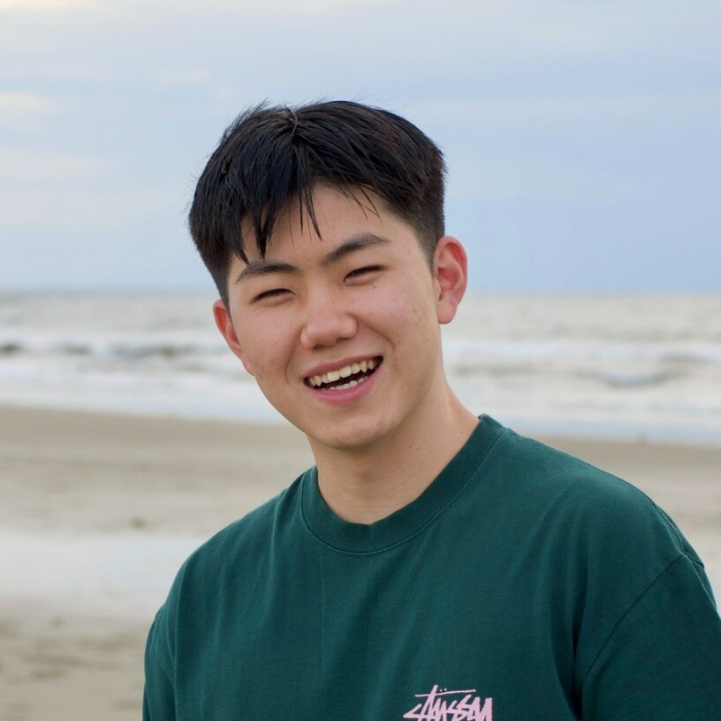

2026
View Space: Learning Representation across Arbitrary Graphs
International Conference on Machine Learning (ICML), 2026
Graph ML
Foundation Models
Representation Learning

M.S. Student, KAIST Electrical Engineering
I build foundation models for structured data.
I am a second-year M.S. student in Electrical Engineering at KAIST, advised by Prof. Jaemin Yoo and Prof. Kijung Shin. My research focuses on machine learning for structured data, including graphs, time series, and tabular data, with a recent focus on foundation models.
Outside academia, I have co-founded and worked as a software engineer and designer in multiple startups, building products around LLM-powered workflows, finance, and mobile applications.
International Conference on Machine Learning (ICML), 2026
International Conference on Machine Learning (ICML), 2025
International Conference on Machine Learning (ICML), 2025
LLM-powered Chrome highlight note-taking.
A Chrome extension that turns browser highlights into structured, real-time notes powered by LLM workflows.
Role: Founding Engineer & Designer at Pensieve Inc.
Impact: Built as part of Pensieve's subscription software suite.
Zoom transcription and automatic meeting notes.
A Zoom transcription product that generates meeting notes automatically from live conversations.
Role: Founding Engineer & Designer at Pensieve Inc.
Impact: Served 3 organizations through early deployments.
ML-based stock information service.
A machine-learning stock information service with user research loops for fund managers and beta users.
Role: Co-Founder, Software Engineer & Designer.
Impact: Launched private beta with 200+ users.
Exhibition ticket-based F&B coupon redemption.
A mobile app where users upload exhibition tickets and redeem food-and-beverage coupons.
Role: Software Engineer.
Impact: Awarded 2nd place in an Art Service growth support project.
Advised by Prof. Jaemin Yoo and Prof. Kijung Shin. GPA: 3.88.
Double major. Graduated cum laude with GPA 3.77.
Graph-based tracking of news propagation on social media using LLMs.
Studied traditional and recent advances in graph machine learning.
Studied foundational deep learning papers in computer vision and multimodality.
Co-founded a US startup building LLM-powered software products.
Supported US-KR communication at USAG Humphreys.
Research: Graph Machine Learning, Foundation Models, Time-Series Modeling, Tabular Learning, Predictive AI
Machine Learning: PyTorch, PyTorch Geometric, DGL, Weights & Biases
Programming: Python, C, C++, Java, JavaScript, TypeScript
Front-End & UI: HTML, CSS, React, React Native, Flutter
Back-End & Data: MySQL, Neo4j, Chroma, Firebase, Google Cloud Platform
Design & Tools: Figma, Adobe XD, Adobe Illustrator, Git, Chrome Extensions, Zoom Apps
EE209, KAIST
Developed a data structures programming assignment with auto-grading for 200+ EE majors each semester.
EE412, KAIST